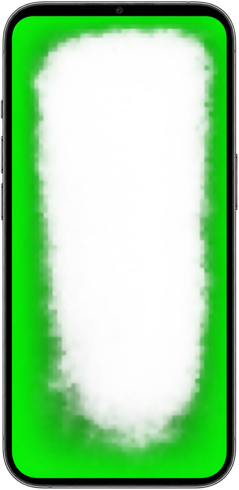
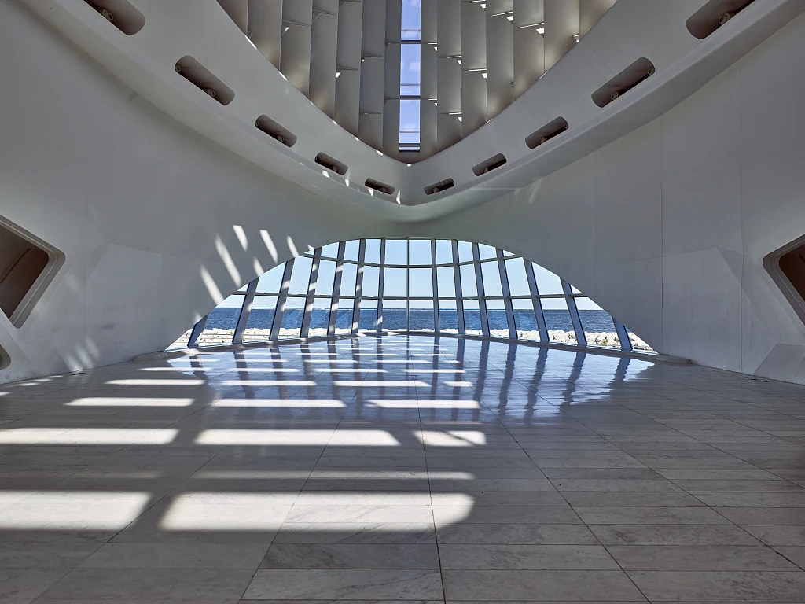

LIENZO / Interaction design
Interactive Phone Prototype
Try a mobile flow from the lock screen into an app. Replace the screenshots and configure hotspots to make your own design interactive.
04 screensHTML · CSS · JS
Interactive prototype
Lock screen


09:41
Tuesday, November 17
Visitor guide
Art Museum
Explore the Milwaukee Art Museum’s Quadracci Pavilion.
01 · Milwaukee
Quadracci Pavilion

The atrium’s windows look out over Lake Michigan.
02 · Visitor guide
Tour complete
You’ve completed the sample tour.
How to use it in your project
Extract the ZIP and open index.html. Customize the demo and download your edited HTML. Keep its styles, scripts, fonts, and notices beside it. Demo changes and favorites reset on reload.